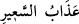
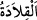

“
”, ateşin alevlenmesi demektir. “
” ise son derece sıcak ve kaynar
sudur. Nitekim el-Müfredât’ta böyle geçmektedir.
Âyette tevhid ve ilâhî sıfatlar gibi usûl/îtikad konularında taklid açık bir şekilde
yasaklanmaktadır. “Taklid” sözlük olarak bir şeyi, onu tam kuşatıp saracak şekilde
boyna yerleştirmektir. Yular mânâsına gelen “
” bu kökten gelir. Sonra bu kelime,
sanki boynuna bağlamış gibi işi başkasına havale etmektir. Istılâh olarak başkasının
sözünü herhangi bir delile ihtiyaç duymaksızın kabul etmektir. Rasûlullah (s.a.)’in
sözlerini delilsiz olarak almak bunun dışındadır. Çünkü o sözlerin bizâtihî kendileri
delildir.
et-Ta‘rifât”ta der ki: Taklid, bir insanın hiç düşünmeden ve delili bulunup
bulunmadığını araştırmadan, üstelik doğru olduğuna inanarak söylediği veya yaptığı işte
başkasına uymasıdır. Böylece o insan, sanki başkasının sözünü veya fiilini kendi
boynuna kolye yapmış olur.”
Taklid, fürûda ve amelî hususlarda câiz olmasına rağmen, dînin usûlünde ve îtikâdî
konularda câiz değildir. Çünkü îtikadî konularda nazar (tetkik, düşünme) ve istidlâl
şarttır. Fakat Hanefîlere ve Zâhirilere göre mukallidin îmânı sahihtir. Mukallid, âlemin
sonradan yaratılması, Yaratıcı’nın varlığı ve sıfatları, peygamberlerin gönderilmesi ve
onların getirdiklerinin gerçek olması gibi hususlara delil olmaksızın inanan kimsedir.
Nitekim Peygamberimiz (s.a.), kendilerine bir delil öğretmeksizin bedevîlerin,
çocukların, kadınların, köle ve câriyelerin îmânını kabul etmiştir. Fakat insan nazar ve
istidlâli terk ederse, vacip olan bir şeyi terk ettiği için günahkâr olur.
Faslu’l-hitâb’da der ki: “Müslüman beldelerde yetişen, ilâhî san‘at tecellilerini
gördüğünde Allâh’ı tesbîh eden kimse taklid sınırları dışındadır. Yâni böyle mukallid,
dağın tepesinde yaşayan kişi gibi istidlâli terk etse günahkâr olmaz. Çünkü Allâh’ın
yarattığı o varlıkları gördüğünde yaptığı tesbîh, istidlâlin ta kendisidir. Sanki o şöyle
demektedir: “Varlıkları böyle bir güzellikte yaratan şüphesiz Allah Teâlâ’dır. Böyle
şeyleri yaratmaya O’ndan başkası güç yetiremez.” İşte bu, eserden müessire bir istidlâl
ve O’nun kudret ve iradesinin bir isbâtıdır. İstidlâl, yaratılandan Yaratan’a intikaldir.
Burada aklî kaidelere dayanarak bir neticeye ulaşabilmek için küçük ve büyük önerme
(suğrâ, kübrâ) ve mukaddimelerin tertîbi gibi mantık kaidelerini mülahazaya gerek
yoktur. Bu değerlendirmeye göre içinde yaşadığımız zamanda mukallid nâdirdir.
Âyette işâret vardır ki, marifet yoluna kıt akıl ile sülûk eden kişi bu yolda mukalliddir
ve onun peşinden gitmek doğru değildir.
Tahkîk Kâbesine gitmek istersen,
Yolunu kaybetmiş taklitçilerin peşinden gitme.
Ancak velâyet sâhibi, rabbânî âlim, tarîkatın esrârına vâkıf, hakîkat âleminin
menzillerini bilen, Kur’ân’ın hakikatlerini keşfeden ve Furkan’ın mânâlarına muttali
olan kimsenin peşinden gitmek ve ona uymak lazımdır. Çünkü böyle bir kimse, Allah